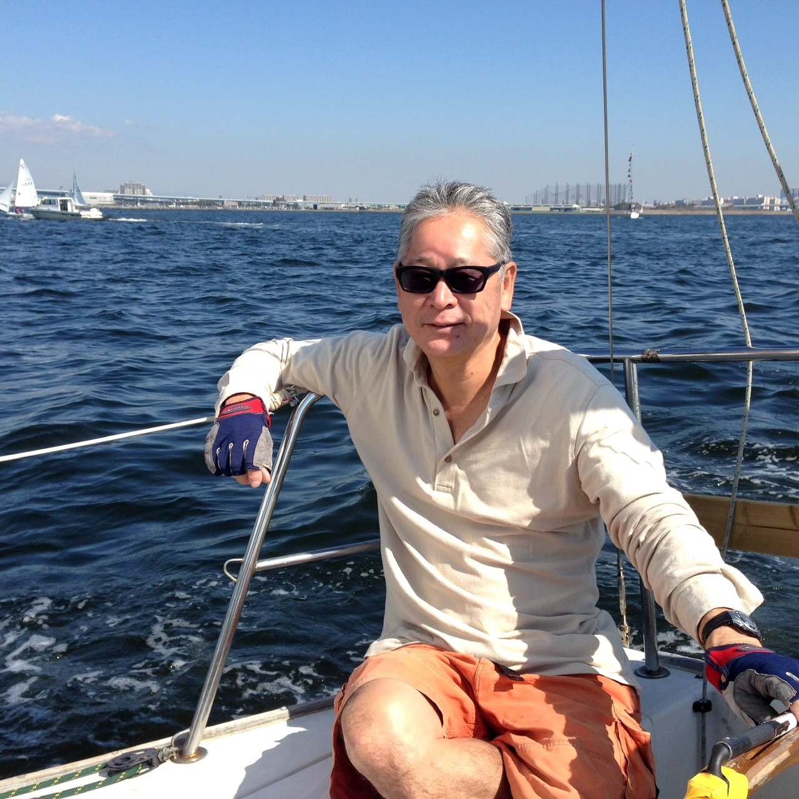
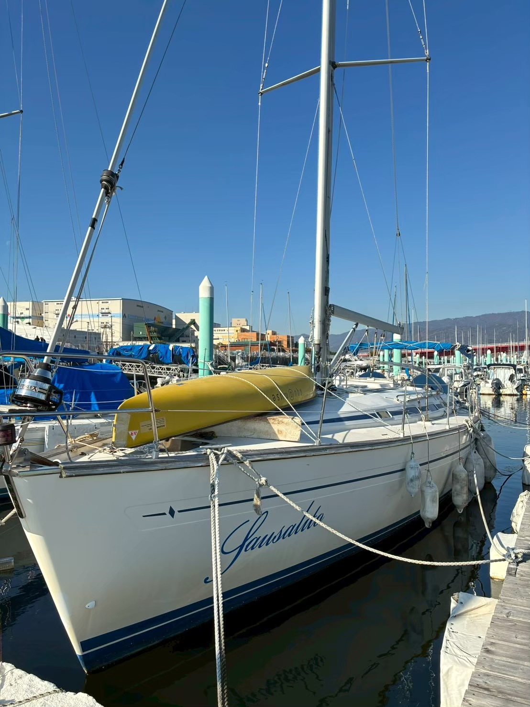

はじめての方へ
ヨットに触れたことがなくても大丈夫。見学だけ、同乗だけ、もちろん歓迎します。泳げなくても、ライフジャケットがあなたを守ります。
詳しく見るEST. 1984 · NISHINOMIYA
初めてヨットに触れる方にも、久しぶりに海へ戻りたい方にも。
サウサリートヨットクラブは、西宮港周辺で毎週日曜に活動する、1984年から続く歴史あるクラブです。
クルージング中心の心地よい時間の中で、海の楽しさを自分のペースで取り戻せます。
まずは無料体験からご参加ください。
サウサリートヨットクラブは、1984年に西宮港で発足したヨットクラブです。
日曜の午前、海に出て、帆を上げ、風に任せて少し沖まで。
そうして気持ちのいい時間を分け合うこと——それだけを、長く大切に続けてきました。
メンバーの年齢も、ヨットの経験も、本当にさまざま。
ひとりで参加する方、友人たちと参加する方、ブランクのある方も、自然と馴染んでしまう。
そんな海辺のクラブです。

海の楽しみ方は、ひとつではありません。あなたの「ちょうどいい」を、私たちは知っています。
レースではなく、クルージング。スピードではなく、心地よさ。私たちが続けてきた、3つの海の時間。
10時頃に集合し、午前から午後にかけて港の周辺を帆走。風と相談しながら、その日いちばん気持ちのいいコースへ。気軽に参加できる、クラブの基本の時間です。
競い合うことが目的ではないから、誰かと比べる必要がありません。帆を風に預け、ただ海の上にいることを楽しむ。そんな静かな贅沢を、長く続けています。
春や秋には、数日かけて少し遠くの港へ。瀬戸内の島々を巡ったり、夕暮れの停泊地で食事を分け合ったり。日常から少しだけ離れる、特別な時間です。
「風が変われば、海も変わる。
だから、同じ日曜は二度とない。」
— A member, 12 years aboard
日々の出航の様子、空と海の表情、メンバーの笑顔。
Instagramで活動の雰囲気を見ていただけます。